Retained full-fur appearance with the rounded lower chest. The face, ears, plume, legs and expression controls are preserved. The coat contains 1,999,138 strands; it has not been reduced for performance.
These twelve images are actual OloEditor OpenGL Forward captures with fixed, checked cameras. Click an image for its native resolution. Asset hashes and capture evidence.
This gallery records the approved appearance. The selected source workflow uses editable meshes and reproducible refinement recipes. See the source and delivery guide. Renderer performance work is separate.
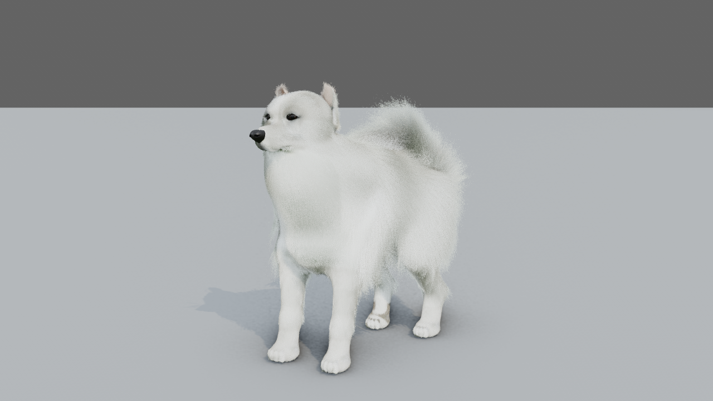
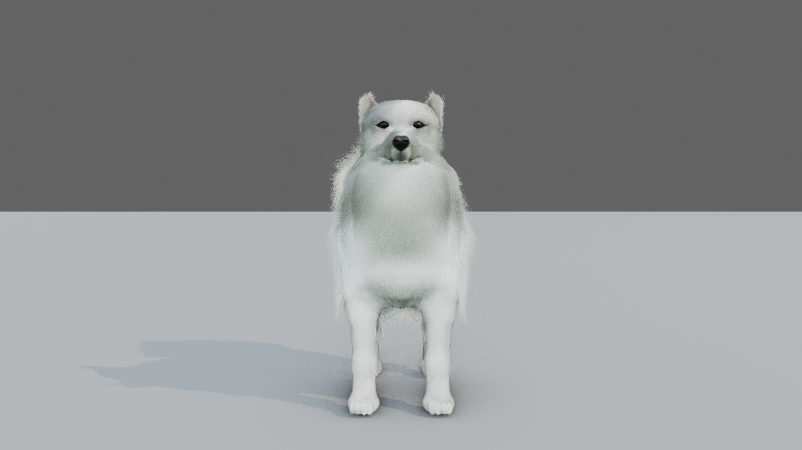
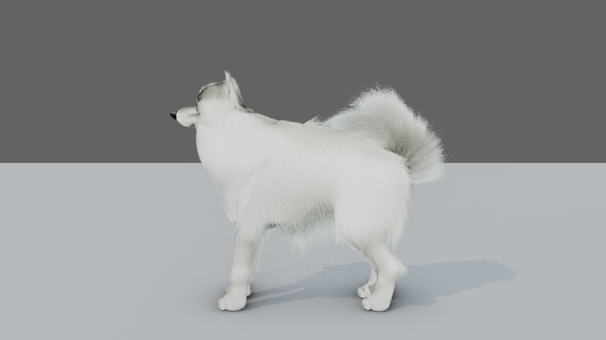
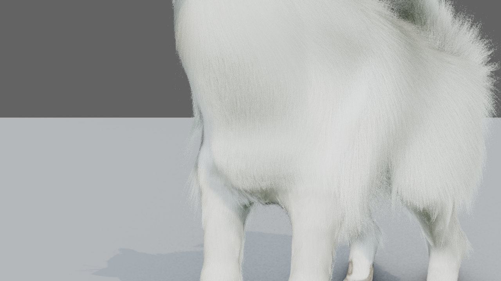
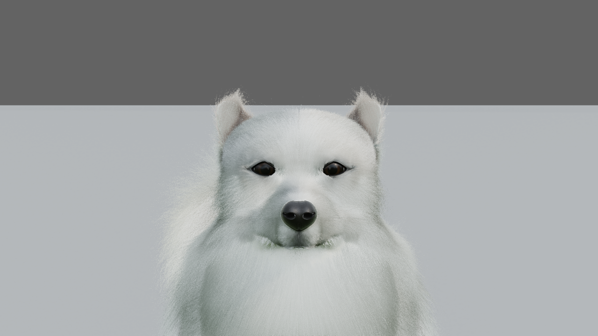
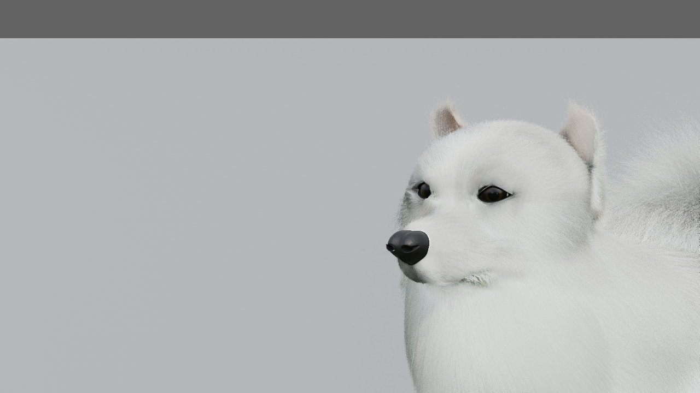
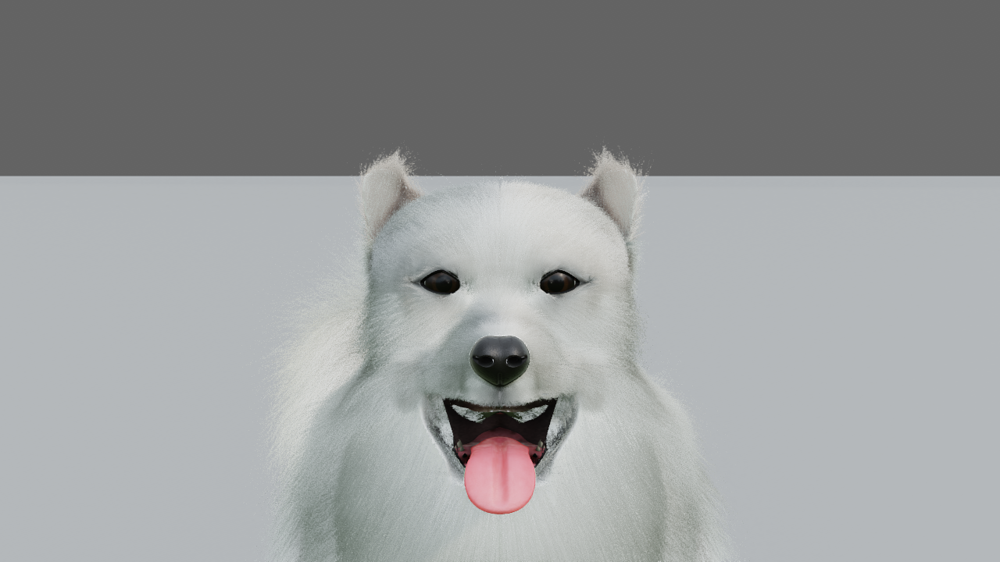
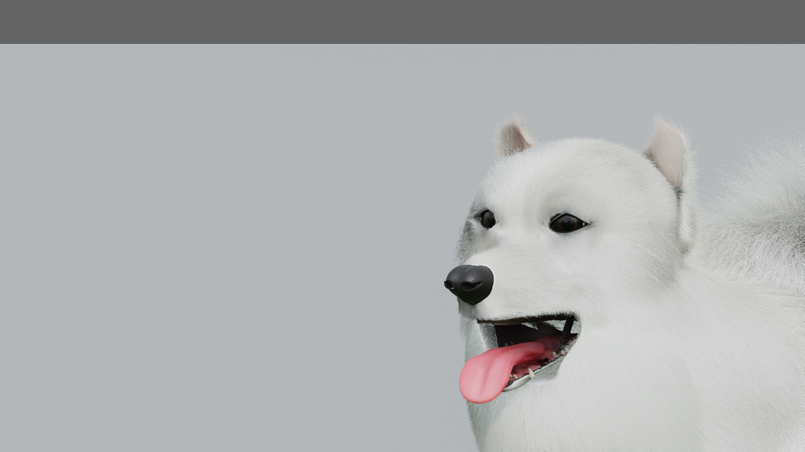
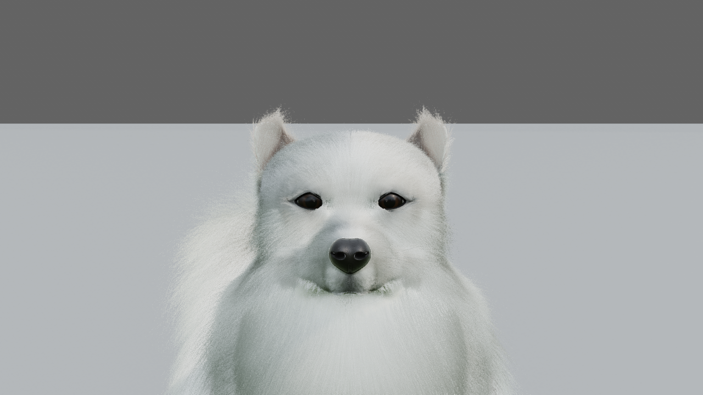
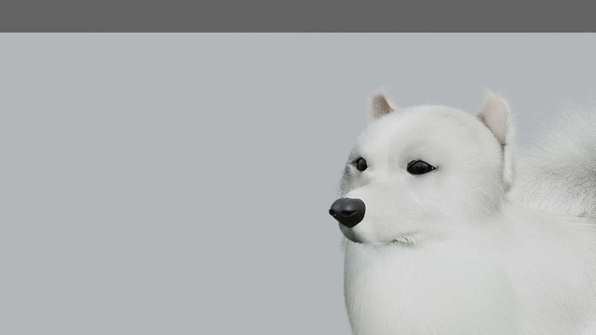
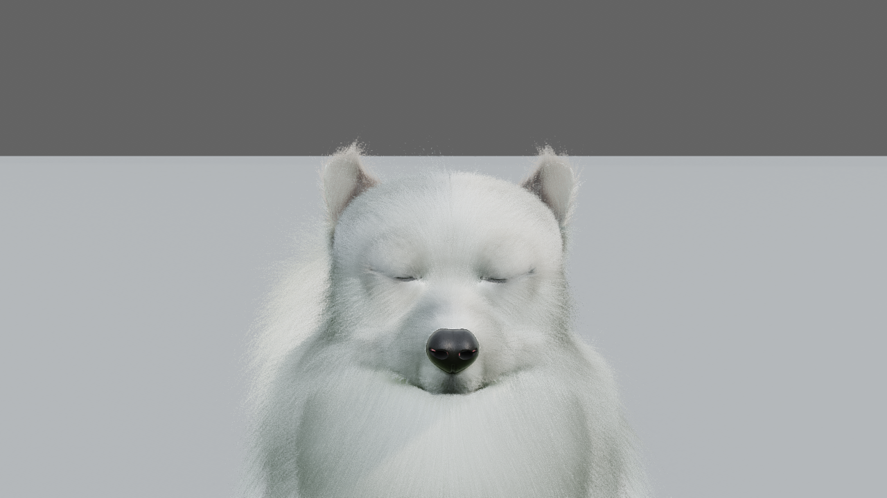
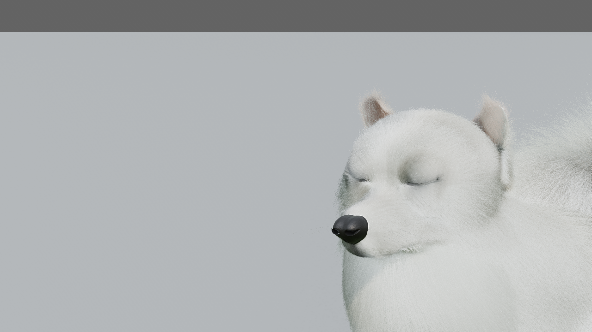